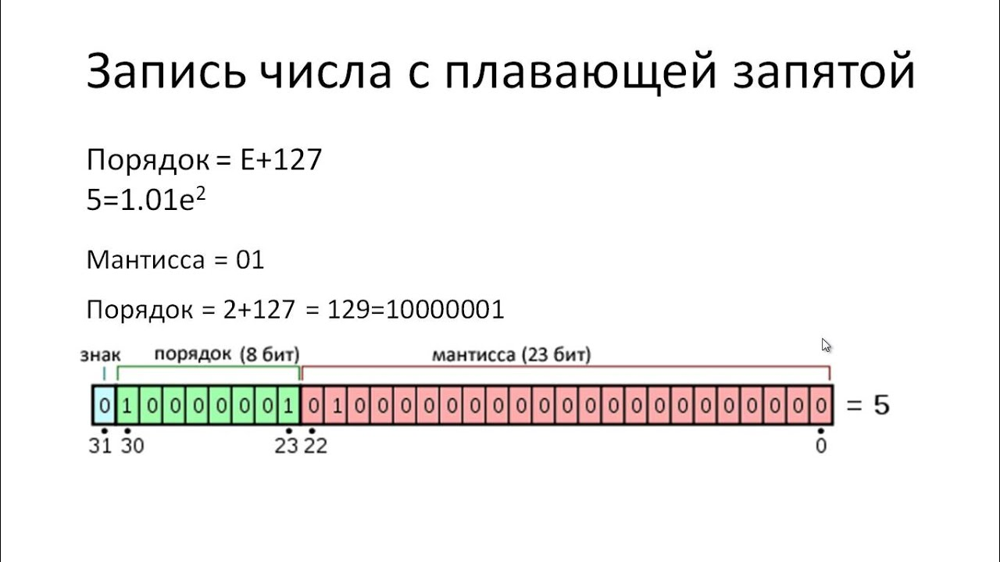

Для удобства, будем использовать только 8-битные числа
5 - 1012; мы должны дополнить его до байта
0000_0101
При этом старший (левый) бит мы используем как знак:
-5 = -1012
1000_0101
Минус способа - нужно обрабатывать не только само число, но и его знак.
P.S. В прямом коде есть число 1000_0000, то есть -0. Это также уменьшает количество возможных чисел на 1
Вспомним один факт: если мы используем лишь один байт, то при увеличении 1111_1111 (255) на один, мы получим 1 0000_0000, причем лишняя единица, не влезшая в байт, удаляется. То есть, 255+1=0 в 8-разрядной системе
Теперь захотим использовать этот принцип, чтобы обычным сложением получать -1+1=0.
Неотрицательные числа не трогаем - 1=0000_0001; 0=0000_0000
Теперь нам нужно, чтобы 0000_0001+x=0000_0000. Этот x в нашей системе должен быть равен 255.
Таким образом, 0000_0001+1111_1111=0000_0000. То есть -1=1111_1111
Подытожим выводы: нам нужно представлять отрицательные числа в таком формате, чтобы их можно было складывать с другими, не заботясь о знаке. Именно для этого был придуман дополнительный код.
Чтобы получить дополнительный код числа, нужно инвертировать все биты его модуля и к результату прибавить 1.
-5 = -101
Подставляем его модуль в размер байта: 0000_0101
Инвертируем: 1111_1010
Прибавляем 1: 1111_1011
Проверка сложением -5+5: 1111_1011 + 0000_0101 = 1 0000_0000, лишнюю единицу выбрасываем - получаем 0.
Из отрицательного числа можно получить противоположное повторным применением дополнительного кода: 1111_1011 -> 0000_0100 + 1 -> 0000_0101
Примечание: ради компактности мы пишем байт как 16-ричное число, то есть 0b10100101 = 0xa5 (0b - значит двоичная запись (от слова Binary), 0x - шестнадцатиричная (от слова heXadecimal))
Максимально подробно разъяснено тут:Ютуб

Идея основана на экспоненциальной записи числа (Например, 1.2345 * 1015= 1234.5*1012)
Так как мы используем двоичную систему счисления, то как основание порядка используем 2n
Пример: -101.1*223
Так как в компьютере ограничена память, то мы делим общее количество разрядов под число на 3 части: знак(1бит), мантисса и порядок.
Мантисса - само число по модулю, записанное в виде 1.1011101 (Всегда одна цифра перед запятой, причем эта цифра всегда 1)
Так как нет смысла писать целую часть числа (она всегда 1), пишем только цифры после запятой, справа налево (от более старшего к младшему)
Чтобы не записывать порядок с использованием обратного кода, всегда прибавляем к нему 127 (то есть порядок 0 записываем как 127, и запись 127 означает 0 порядок. Соответственно, 126 - -1 порядок, 128 - 1 порядок.)
Примечание: 0 и -0 мы записываем с нулями во всех разрядах (кроме знака). Это достаточно логично - запись с 0 мантиссы и 0 порядком означает 1.0*2-127, что достаточно близко к 0 с учётом точности.
При выполнении действий над двумя числами с плавающей точкой нельзя просто сложить мантиссы и порядки по отдельности. Сначала числа нужно привести к «общему знаменателю» — то есть к одинаковому порядку.
Общий алгоритм для сложения и вычитания:
Пример сложения:
Сложим 1.0 * 23 и 1.0 * 21.
Пример вычитания:
Вычтем 1.0 * 21 из 1.0 * 23.
Умножение:
Деление:
Важное замечание: при выравнивании порядков младшие разряды мантиссы меньшего числа могут теряться. Это одна из причин, почему операции с плавающей точкой не всегда точны. Чем больше разница порядков, тем больше потеря точности.
Ещё одно замечание: если после выравнивания порядков мантисса меньшего числа полностью ушла вправо и стала равной нулю, то при сложении она просто не повлияет на результат, а при вычитании — результат будет равен первому числу. Это нормальное поведение.
Целые числа в памяти компьютера хранятся в двоичном виде. Каждый бит числа имеет свой номер: биты нумеруются справа налево, начиная с 0. Например, 8-битное число состоит из битов с номерами от 0 до 7.
Над отдельными битами можно выполнять логические операции. Они работают не с числом целиком, а с каждым его разрядом по отдельности. Это позволяет управлять отдельными битами: устанавливать их в 1, сбрасывать в 0, проверять их значение или инвертировать.
Чтобы установить нужный бит в 1, применяют операцию ИЛИ (OR) с маской, у которой этот бит равен 1, а все остальные — 0.
Например, нужно установить биты {6, 3, 0} в числе 0x42. Строим маску и применяем её:
| Бит | 7 | 6 | 5 | 4 | 3 | 2 | 1 | 0 |
|---|---|---|---|---|---|---|---|---|
| Число | 0 | 1 | 0 | 0 | 0 | 0 | 1 | 0 |
| Маска | 0 | 1 | 0 | 0 | 1 | 0 | 0 | 1 |
| Результат | 0 | 1 | 0 | 0 | 1 | 0 | 1 | 1 |
Там, где в маске стоит 1, бит результата становится 1 независимо от исходного значения. Там, где в маске 0, бит сохраняется без изменений.
Чтобы обнулить нужный бит, применяют операцию И (AND) с маской, у которой этот бит равен 0, а все остальные — 1.
Например, нужно обнулить биты {7, 5, 2} в числе 0xBF. Строим маску и применяем её:
| Бит | 7 | 6 | 5 | 4 | 3 | 2 | 1 | 0 |
|---|---|---|---|---|---|---|---|---|
| Число | 1 | 0 | 1 | 1 | 1 | 1 | 1 | 1 |
| Маска | 0 | 1 | 0 | 1 | 1 | 0 | 1 | 1 |
| Результат | 0 | 0 | 0 | 1 | 1 | 0 | 1 | 1 |
Там, где в маске стоит 0, бит результата становится 0 независимо от исходного значения. Там, где в маске 1, бит сохраняется без изменений.
Операция XOR применяется к двум числам побитово. Результат равен 1 в тех разрядах, где биты чисел различаются, и 0 — где они совпадают.
Пример: 0xA7 XOR 0x3D.
Переведём в двоичный вид и выполним XOR поразрядно:
| Бит | 7 | 6 | 5 | 4 | 3 | 2 | 1 | 0 |
|---|---|---|---|---|---|---|---|---|
| 0xA7 | 1 | 0 | 1 | 0 | 0 | 1 | 1 | 1 |
| 0x3D | 0 | 0 | 1 | 1 | 1 | 1 | 0 | 1 |
| Результат | 1 | 0 | 0 | 1 | 1 | 0 | 1 | 0 |
Получаем: 1001 1010 = 0x9A.
Важное свойство XOR: если применить XOR дважды с одним и тем же числом, вернётся исходное значение. Это часто используется в шифровании и проверке чётности.
Битовые операции позволяют эффективно работать с отдельными битами числа. Они используются для:
Понимание битовых операций помогает лучше понять, как компьютер хранит и обрабатывает информацию на самом низком уровне.